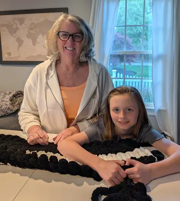

Welcome to Nanny Knits
I'm Laurie Reed, the hands and heart behind Nanny Knits. Knitting isn't just a hobby for me; it's a cherished passion passed down through generations. There's nothing quite like the warmth and comfort of a hand-knitted blanket, meticulously crafted with love and care in every single stitch.
Based in historic Plymouth, MA, I pour my creativity and dedication into making beautiful, cozy blankets designed to bring joy and lasting comfort to your home. Each piece is a unique creation, made with high-quality yarn and an unwavering attention to detail. Explore the gallery to see examples of my work or contact me to discuss a custom order!